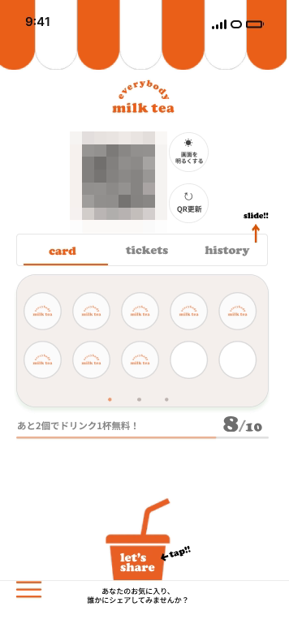

Case 01
Tamary
会員情報、特典、履歴、会員QRを店舗で扱う会員アプリ。顧客・スタッフ双方の画面と操作フローを設計し、Web・Nativeの開発と検証を進めています。ここでは会員体験を確認するWebモックを掲載しています。
Figma
会員ホームの代表画面。残高・特典・履歴・QRへの導線を一画面に整理しています。

Prototype
会員ホームからQR表示、履歴、メニューへ移動する操作を収録しています。
動画の内容
会員ホームを起点に、会員QRを上下から隠す・再表示する操作、履歴の確認、メニュー画面への移動を順に収録しています。
再生できない場合は、動画ファイルを直接開くことができます。
実装・検証事実
- 01主要画面をまたぐ操作フローを実装
- 02会員・スタッフ画面の情報設計を統一
- 03会員QRの表示・非表示動作を検証
掲載動画は会員体験を確認するためのモックです。QR・会員IDなどの識別情報をマスクしています。製品の外部サービス連携や本番公開を示すものではありません。